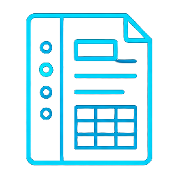
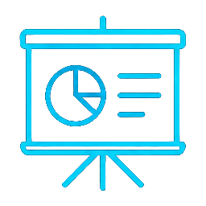
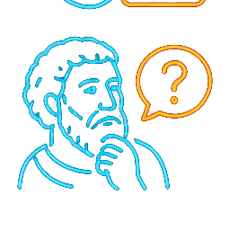

AI 數位教學實務工作坊
講師 阿凱老師（黃凱揚）・桃園市龍潭區石門國民小學
教育學院一館 501 教室 10:00–16:00
10:15–10:35
這節課學生要帶走什麼？
AI 不知道你的學生是誰。
內容對不對、適不適齡、
有沒有迷思概念，由你把關。
鼓勵、等待、看見孩子的進步，
這是 AI 給不了的。
10:35–11:05 Gemini Notebook（原名 NotebookLM）
你是【年級／科目】的課堂助教，服務對象是正在學這個單元的學生。 請遵守： 1. 解釋一律以來源中的課本內容為準，不自行補充課本沒有的定義。 2. 每個說法都標註出處（課本頁碼或段落）；用到課本以外的知識時，明確註明「課本外補充」。 3. 學生問「這題怎麼解」時，先給提示或反問一個小問題，不直接給答案。 4. 不更改題目中的任何數據，也不自行替計算題寫出答案。 5. 用【年級】學生聽得懂的語氣，一次只說明一個概念。

有目錄、可跳轉的學習筆記
先建立單元的概念骨架

抽象概念的圖解拆步驟
正反面翻卡，不熟的留下複習
一張海報濃縮整個單元
附提示與錯題說明
適合翻轉預習
像 Podcast 的對談導讀
| 教材 | 課前（預習） | 課中（教學） | 課後（複習） |
|---|---|---|---|
| 🧠 心智圖 | 預覽單元架構 | 講解時當導覽地圖 | 單元總整理 |
| 🃏 學習卡 | 檢核先備知識 | 分組搶答活動 | 自主複習、間隔重複 |
| 📊 資訊圖表 | — | 小組討論的鷹架 | 考前一分鐘 |
| ✅ 測驗 | 前測 | 形成性評量 | 補救練習 |
| 🎧 影音／語音摘要 | 翻轉預習 | — | 請假補課 |
重點不是「有幾種教材」，而是每一種放在哪個時機、解決哪個學習困難。
下午 13:00 回來，我們要讓 AI 動起來
13:10–14:15 Gemini Notebook × Gemini Canvas
比喻：教材包是一箱零件，駕駛艙是組好的飛機——學生坐進去就能起飛。
單元數為正式網站 2026-10-18 盤點（三年級 7、四年級 6、五年級 8、六年級 18、教師研習 2、跨年級 1）；每單元關卡數依作者 2026-05 部落格。
請根據來源，幫我整理【單元名稱】的教學內容，對象是【年級】學生： 1. 難點：學生最容易卡關的 3 個地方或迷思概念，各附一句澄清說法。 2. 關卡：依教學順序把單元分成 3～4 個關卡，每關列出學習重點與操作步驟。 3. 生活連結：每個關卡各一個生活例子，以及一個 5 分鐘內能完成的課堂小活動。 4. 常見問題：學生最常問的 5 個問題與簡短解答。 另外，每個關卡請出 2 題四選一選擇題，附正確答案與一句說明。 每一點都標註來源頁碼；課本以外的補充請註明「課本外」。
回答出來後按「儲存至記事」，下一步直接整段複製給 Canvas。
請幫我做一個單頁的「教學駕駛艙」網頁，讓我上課投影、學生課後自學都能用。 單元：【 】 年級：【 】 時間：【一節 40 分鐘】 版面由上到下： 1. 頂部：單元標題、年級、「學生／教師模式」切換（教師模式才顯示教師提示） 2. 學習目標：4 個小標籤；下面是關卡導覽按鈕 3. 每個關卡：操作步驟、一個可點擊的互動小練習、2 題選擇題（答對給鼓勵，答錯說明原因）、教師提示 4. 今日任務卡：學生要完成的作品與檢核標準 5. 資源站：連到我的筆記本 【貼上分享連結】，並列出常見 5 問 6. 右下角浮動工具：號碼抽籤（1～30 不重複）、倒數計時器 風格：【明亮糖果／像素遊戲／手繪筆記】，內文至少 18px，手機也能操作，打開時停在頁面最上方。 以下是我的教學內容：【貼上備課四問的回答】 動手前，先問我 3 個問題確認需求。
請製作一段 30 秒、有女聲旁白解說、有字幕的動畫， 向【國中八年級】學生解釋【光合作用】。 畫面請用簡單的立體圖示，一次只出現一個重點。 /grill me
每一款都從「教學現場的一個困擾」開始，跟你剛剛做的教具是同一條路。
數據依據本機專案 H:\Akai v3.6.168（2026-10-18 盤點）。
14:15–14:35
請它解第 4 題，它先跑去翻第 6 題的舊檔案，繞一圈才回來。
第一次偷懶直接寫答案，沒人要求，它卻自己重寫、跑一千筆資料驗證。
答案其實是心算的，再塞進程式裡交差，看起來像程式算出來的。
出處：101事務所影片 08:59–10:01。結論：再嚴謹的設計，都不能保證 AI 百分之百可靠。
長方形周長 24 公分，長比寬多 4 公分。設寬為 x，2（x＋x＋4）＝24，得 x＝4，長＝8，所以面積＝4×8＝36 平方公分。
水在 1 大氣壓下 100°C 沸騰。高山上氣壓較低，所以水的沸點會更高，煮麵更快熟。
「床前明月光，疑是地上霜」出自杜甫的〈靜夜思〉，描寫遊子思鄉之情。
14:45–15:35
影片中的解題系統，在專案最上層放一份守則檔，所有 AI 代理人都要遵守。
就像學校的校規：不管哪一位老師上課，都不能違反。
確認題目完整（圖、數據、問哪一小題），再分派給負責的代理人。
收到題目後，自己寫程式解題、驗算，把正確解法交給家教。

拿到解法但不說破，用提問陪學生一步一步想出來。
為什麼要分工？一個 AI 同時「解題」又「教學」，很容易急著把答案說出來。
# 全域守則（最高原則）
你是【年級／科目】家教。永遠不直接給最終答案；一次只問一個小問題。計算一律寫出算式並自行驗算；不確定時說「我不確定」，不要編造。
# 角色一：櫃台
收到題目，先確認題目完整（圖、數據、問的是哪一小題）。缺什麼就請學生補上，確認後再開始。
# 角色二：解題專家
在開始引導之前，先完整解題並驗算一次，確定正確解法與關鍵步驟。這段過程不要給學生看。
# 角色三：蘇格拉底家教
依關鍵步驟，一次問一個小問題。學生答錯時，把問題拆得更小；答對時，具體稱讚做對的地方。
最後請學生用自己的話說明解法。
誠實提醒：Gem 沒有真正的「後台」，也不會真的執行程式驗算，可靠度不如影片中的程式化系統，仍需要老師把關。
工具會一直換，這四件事會一直有用。